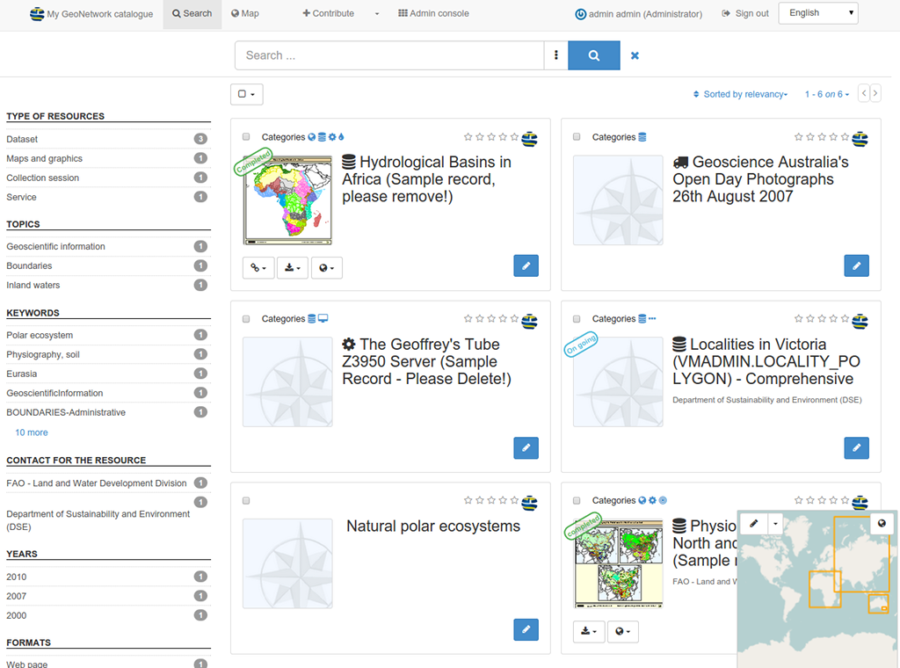

GeoNetwork¶
Catalogue de métadonnées¶
GeoNetwork OpenSource est une application de catalogue pour la gestion des ressources référencées spatialement. Il offre des fonctions puissantes d’édition et de recherche de métadonnées, un visualiseur de cartes web interactif intégré et est basé sur des standards ouverts.
{kind=link}
Caractéristiques principales¶
- Accès immédiat aux catalogues géospatiaux locaux et distribués.
- Envoi et téléchargement de données, graphiques, documents, fichiers pdf et tout autre type de contenu
- Un visualiseur cartographique interactif pour combiner les Web Map Services à partir de serveurs distribués autour du monde
- Les entrées récemment mises à jour sont accessibles sous forme de flux RSS et GeoRSS.
- Edition en ligne des métadonnées avec un puissant système de template
- Prise en charge native des métadonnées formatées ISO19115/ISO19119/ISO19139/ISO19110 et Dublin Core.
- moissonnage planifié et synchronisation des métadonnées entre catalogues distribués (GeoNetwork, CSW, GetCapabilities WxS OGC, WebDav, ArcSDE, Thredds, OGC WFS Features, OAI-PMH)
- Contrôle d’accès précis
- Gestion des groupes et des utilisateurs
- Interface utilisateur multilingue
Standards implémentés¶
- Catalogue Service-Web (CSW) 2.0.2 OGC ISO
- Open Archives Initiatives (OAI-PMH)
- OpenSearch-Geo
- OAI-PMH
- Standards de métadonnées:
- Profils ISO19115/ISO19119/ISO19139/ISO19110 et ISO
- Dublin Core
Détails¶
Website: https://geonetwork-opensource.org
Licence: GNU General Public License (GPL) version 2
Version du logiciel: 3.2.1
Plates-formes supportées: Windows, Linux, Mac
Interface de l’API: Java